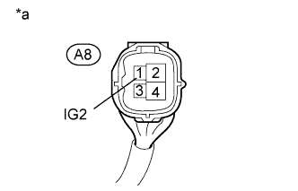

DTC C1242 Open Circuit in IG1/IG2 Power Source Circuit |
| DTC Code | DTC Detection Condition | Trouble Area |
| C1242 | The vehicle speed is 3 km/h (2 mph) or more and the voltage at the ECU IG2 terminal remains below 6.5 V for more than 7 seconds. |
|
| 1.CHECK TERMINAL VOLTAGE (IG2) |
Disconnect the A8 skid control ECU connector.
|  |
Measure the voltage according to the value(s) in the table below.
| Tester Connection | Switch Condition | Specified Condition |
| A8-1 (IG2) - Body ground | Engine switch on (IG) | 11 to 14 V |
| *a | Front view of wire harness connector (to Skid Control ECU) |
|
| ||||
| OK | |
| 2.CHECK HARNESS AND CONNECTOR (GND1, GND2 AND GND3 TERMINAL) |
Disconnect the A7 and A8 skid control ECU connectors.
Measure the resistance according to the value(s) in the table below.
| Tester Connection | Condition | Specified Condition |
| A7-1 (GND1) - Body ground | Always | Below 1 Ω |
| A7-32 (GND2) - Body ground | Always | Below 1 Ω |
| A8-4 (GND3) - Body ground | Always | Below 1 Ω |
|
| ||||
| OK | |
| 3.RECONFIRM DTC |
Clear the DTCs (Click here).
Check if the same DTC is output (Click here).
| Result | Proceed to |
| DTC is not output | A |
| DTC is output | B |
|
| ||||
| A | ||
| ||